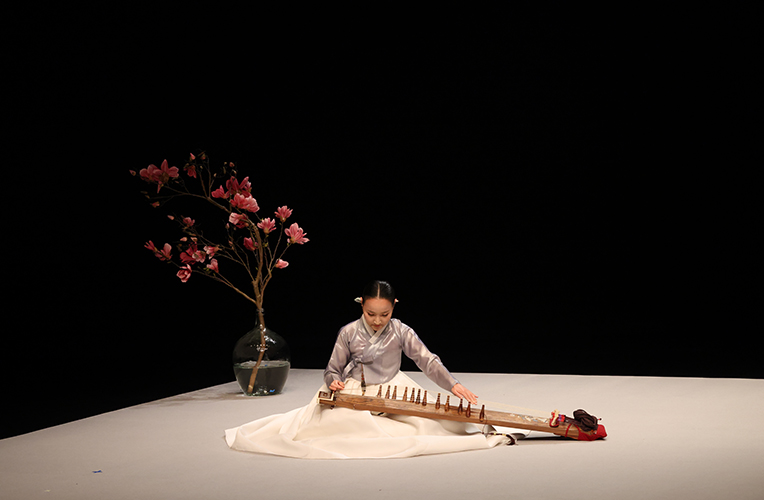

성악단 정기공연 <소리광대 Ⅱ>
- 일시
- 4.13.(목) ~ 4.16.(일) 주중 19: 30 주말 14:00
- 장소
- 예지당
- 관람료
- A석 10,000원 B석 8,000원
- 출연진/연출진
- 국립부산국악원 국악연주단/ 성악단, 기악단
- 관람연령
- 취학아동이상
판소리 완창무대, 명품소리 함께 할 귀명창을 모십니다.
가야금병창 눈대목과 흥보가, 심청가, 춘향가 등의 판소리 완창무대. 국립부산국악원 성악단 4명의 창자가 펼치는 4인 4색의 소리를 마주하는 자리가 될 것이다.
세부프로그램
4/13(목) 가야금병창 눈대목 (소리: 신현주, 고수: 오다교) 4/14(금) 만정제 흥보가 (소리: 조수황, 고수: 윤승환) 4/15(토) 보성소리 심청가 (소리: 정윤형, 고수: 윤승환, 강정용) 4/16(일) 동초제 춘향가 (소리: 신진원, 고수: 이진희, 윤승환, 강정용)
